User Manual
LlamaMXD™ is free software, licensed under the GNU General Public License v3
(or later). You're free to redistribute and modify it under that license's
terms — see LICENSE.txt and the licenses/ folder
next to the app for full details and every third-party notice.
LlamaMXD™ and Pak the Llama™ are trademarks of Yezan Smadi. Logo and brand assets Copyright © 2026 Yezan Smadi, all rights reserved.
Drop a screenshot named welcome.png into
manual/images/
LlamaMXD is a media multiplexer and transcoder with a built in video downloader. You can mux media, encode it, as well as download off the web. In this manual, you will learn the ins and outs of LlamaMXD so that you may be better equipped to handle video and audio in your media workflow.
LlamaMXD is designed to be as intuitive and friendly to use as
possible. Everything you need will be easily accessible. There are 5 main areas
of LlamaMXD; Muxing, Encoding, Downloader, Queue, and Settings.
Muxing is where media multiplexing happens. Here, video/audio do not lose quality
as none of the data in these files are being manipulated. This is because muxing
is simply the process of combining media and packing it into a container and/or moving
it from one container to another (e.g. mp4 to mkv). The actual codec of said media isn't
touched (e.g. H.264 to H.265. This is an example of encoding).
Encoding is where encoding/transcoding [1] happens. Encoding is the process of
compressing media into a file with a codec. This is what the majority of people are
exposed to when handling media (i.e. conversion). It is here that you will mess with
quality sliders, adjust bitrate, and choose media codecs. Encoding is the default tab on
LlamaMXD's launch (this can be changed in Settings).
Downloader is your station for downloading media from the internet. Powered by yt-dlp,
you can download media from the most popular sites on the web. Just paste a link, fetch,
and get ready to download.
Queue is the hub for your muxing/encoding/download jobs. Here, jobs get processed,
executed, and outputted to your save folder.
Settings is the one stop shop for adjusting the look and feel of LlamaMXD, from the
appearance of the program to its performance. Choose your theme from a multitude of
color schemes and finetune how intensively the Llama will work.
Now that you have a general overview, let's start from the top.
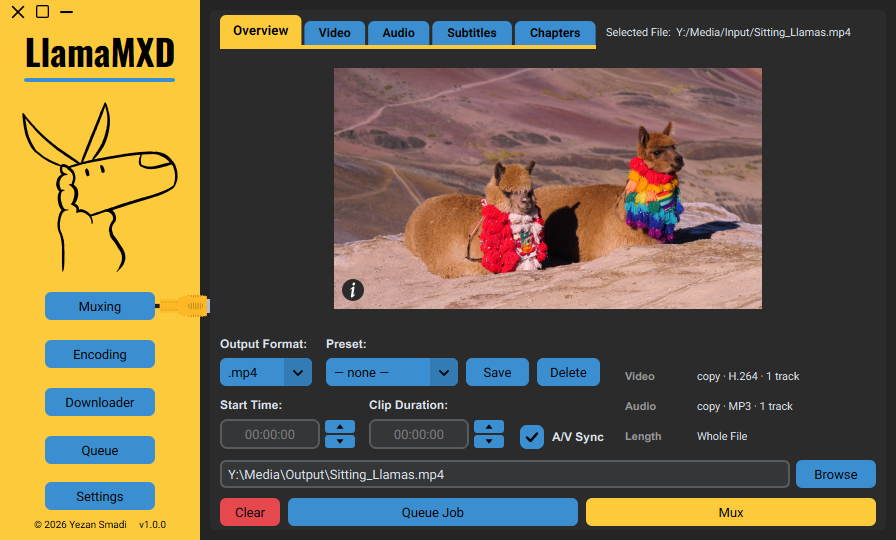
Drop a screenshot named muxing-overview.png into
manual/images/
Multiplexing, also known as muxing, is the process by which pieces of
media (video, audio, subtitles, etc.) are combined and packaged/repackaged into a
container without any sort of encoding. Muxing is a very quick process and even big
files take no time at all. The process is completely lossless.
Muxing and Encoding have the same 5 subtabs: Overview, Video, Audio, Subtitles, and
Chapters.
Muxing and Encoding have very similar Overview subtabs.
To begin, import a file by opening up a file explorer with the browse button, by
dragging and dropping a file into the import box, or by double-clicking within the
import box to open up a file explorer as well.
On the right side is a summary of the imported file's video/audio information and
duration of the file. Here you can also choose your output format, which is simply the
container of the file (e.g. mp4, mkv, mov). You can also create and enable a muxing
preset of your specification that quickly sets up a job. It is also from this subtab
that you can trim your selected file's length, with two fields to set the start time of
the trim and the duration of the trim. Not touching either field will keep the length of
the file intact. Not touching the duration field and leaving the greyed out 00:00:00 as
is will continue the file to its original end. The A/V Sync checkbox enables a constant
framerate mode to align audio and video especially in the cases of variable framerate;
this is on by default.
At the bottom are 4 options that are consistent across all 5 subtabs. They are the
output field, which allows you to set where your file will export; the browse button
opens up a file explorer to choose an output folder. Then you have Mux, Queue Job, and
Clear. Mux will immediately begin muxing your job in the Queue tab, Queue Job will send
the job to your Queue where it will wait to start. Clear will remove the imported file
as your import.
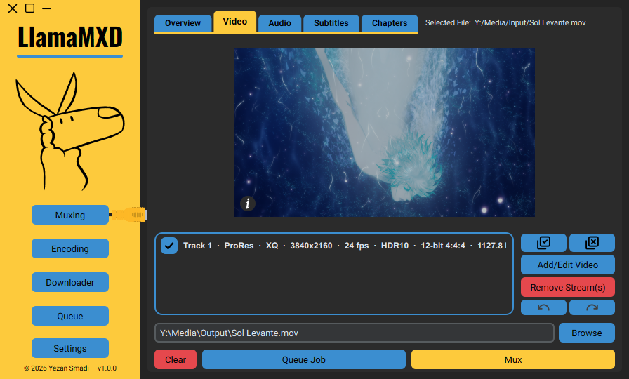
Drop a screenshot named muxing-video.png into
manual/images/
In the Muxing subtab for Video, an imported file will show you a list
of all video streams included with your file. The vast majority of the time you will
only see 1 video stream, but there are rare cases where you might have a file with
multiple video streams; this list allows you to look over your streams, adjust the order
of them, and select/deselect them. Details for the video streams include the track
number, its codec, the profile and level, resolution, FPS, whether it is SDR or HDR, the
color bit depth, and the language.
To the right of the track listing are 4 rows of options. From top to bottom they are:
Select/Deselect All, Add/Edit Video, Remove Streams, and Undo/Redo. Select/Deselect All
will check/uncheck every track in the list. Add/Edit Video opens a window where you can
pick a track and make it the Default (the one players use unless told otherwise), or
browse for a video stream in another file to import. Remove Stream(s) will remove any
selected track completely from the list. Undo/Redo provide you undos and redos for every
action you make in this subtab.
In the case of multiple video streams, you have the ability to drag them up and down the
list to reorder them.
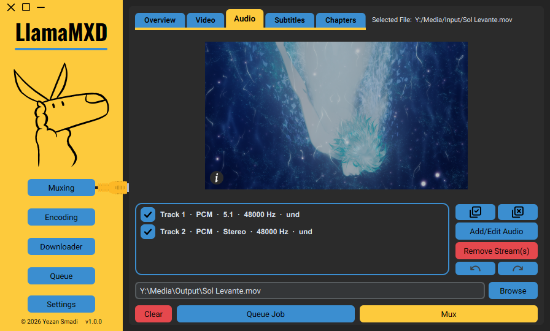
Drop a screenshot named muxing-audio.png into
manual/images/
The Audio subtab is very similar to the Video subtab; there is a track
list, Select/Deselect All, Add/Edit and Remove Streams buttons, and an undo redo.
External audio tracks can be imported via Add/Edit Audio -> Browse.
Just as in the Video subtab, audio tracks can be rearranged, added, and removed as the
controls and track manager in Video and Audio are identical. Audio tracks can also be
edited with the Add/Edit Audio button to set a track as default.
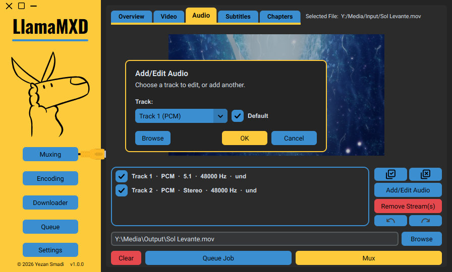
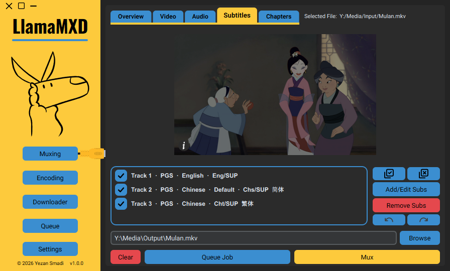
Drop a screenshot named muxing-subtitles.png into
manual/images/
Subtitles, like Video and Audio, have the same buttons and track lister. However, the
Add/Edit button here has an extra feature for subtitles; in addition to setting a
subtitle track as default, the user can also set a subtitle track as "forced".
Forcing a subtitle track allows subtitles to pop up even when subtitles in your video
player are turned off. This is especially useful when a language foreign to the selected
audio language is being spoken, as subtitles will briefly pop up on screen to translate
if forced is selected. The forced tag itself doesn't automatically mean that the
subtitles preform properly; forced subtitles must already have the data inside of them
(e.g. tag specific lines in PGS subtitles as well as subtitles with only foreign
language translations written). In other words, forced subtitles must be preconfigured
before importing, the forced tag by itself does nothing.
Some video formats don't support picture subtitles (PGS/VobSub/DVB) and having an import
with these types of subtitles included will narrow down the video format list down to
mkv, as mkv files are the most tolerant.
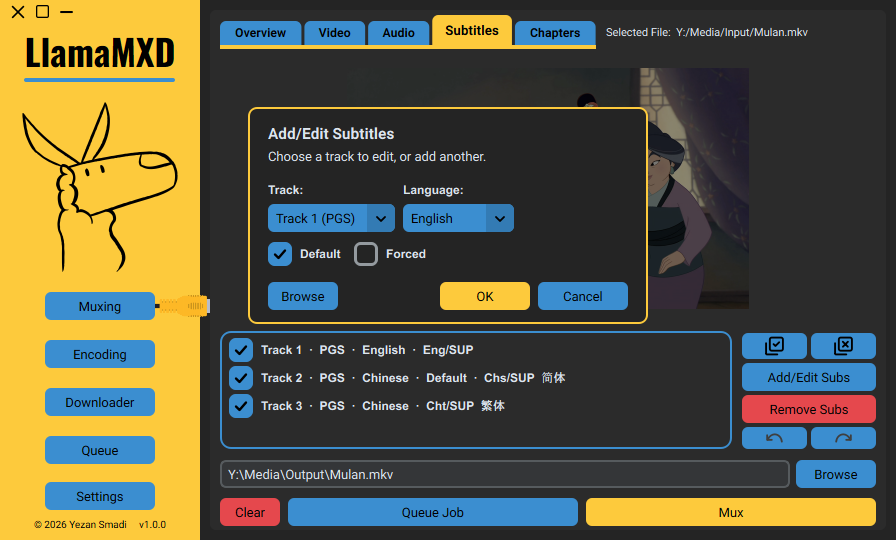
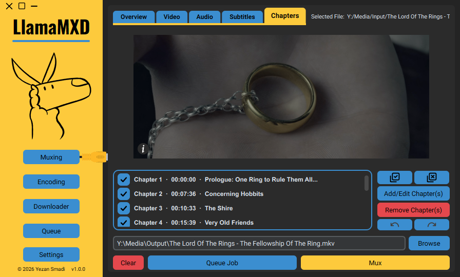
Drop a screenshot named muxing-chapters.png into
manual/images/
Chapters, like every other subtab within Muxing, has a list on the
left and options on the right. Similar to the Subtitles subtab, there is a button for
adding and editing chapters. Here, the timecode and name of a chapter can be edited and
a new chapter can be added as well.
Unticking or removing a chapter from the list won't include said chapters in the
outputted file. Chapters within trimmed files are automatically retimed.
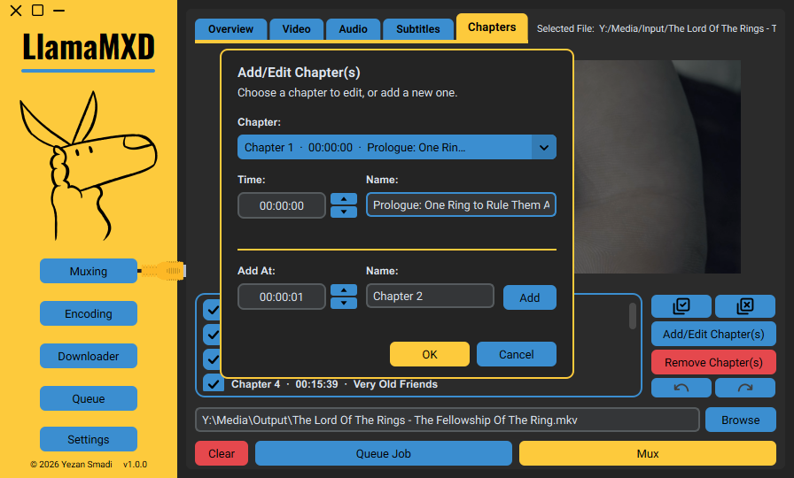
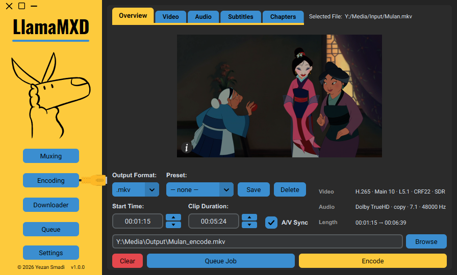
Drop a screenshot named encoding-overview.png into
manual/images/
Encoding is similar to Muxing in that you can package/repackage footage
but differs in a pretty significant way; it's not lossless. Unlike Muxing, which simply
copies the video, audio, subtitle and chapter streams, Encoding must compress these
streams into a new file. This allows for better size and quality
management as one might not want such a high quality and large file size for storage
purposes. Encoding is the type of process that most users are familar with
(e.g. a generic online mp3 converter reencodes a desired file's audio into mp3).
Going back to storage management, an added benefit of Encoding is that it offers a
multitude of different codecs to compress your file with. For example, a compatible file
could be reencoded using the AV1 or HEVC codecs, both of which are better at file
compression and retaining quality than the more common AVC codec. More on this later.
Muxing and Encoding have very similar Overview subtabs.
As with the Muxing tab, import a file by opening up a file explorer with the browse
button, by dragging and dropping a file into the import box, or by double-clicking
within the import box to open up a file explorer as well.
On the right side is a summary of the imported file's video/audio information and
duration of the file. Here you can also choose your output format, which is simply the
container of the file (e.g. mp4, mkv, mov). You can also create and enable a muxing
preset of your specification that quickly sets up a job. It is also from this subtab
that you can trim your selected file's length, with two fields to set the start time of
the trim and the duration of the trim. Not touching either field will keep the length of
the file intact. Not touching the duration field and leaving the greyed out 00:00:00 as
is will continue the file to its original end. The A/V Sync checkbox enables a constant
framerate mode to align audio and video especially in the cases of variable framerate;
this is on by default.
At the bottom are 4 options that are consistent across all 5 subtabs. They are the
output field, which allows you to set where your file will export; the browse button
opens up a file explorer to choose an output folder. Then you have Encode, Queue Job,
and Clear. Encode will immediately begin muxing your job in the Queue tab, Queue Job
will send the job to your Queue where it will wait to start. Clear will remove the
imported file as your import.
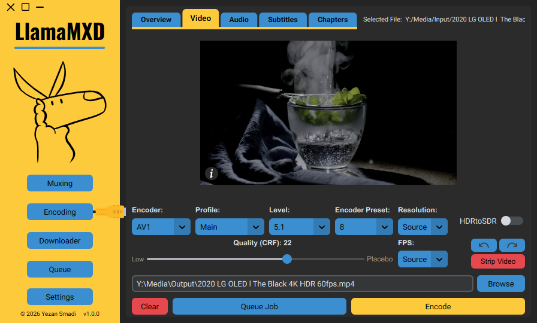
Drop a screenshot named encoding-video.png into
manual/images/
Immediately, Encoding begins to show its differences to Muxing in both its layout and functionality.
Let's start from left to right then move our way down. Starting from the left is the
Encoder dropdown. It is here that codecs are chosen. A full list of file containers and
their supported codecs can be found towards the end of the manual in the Reference
section under Containers and Codecs.
The next two options, Profile and Level, are intertwined. Neither of the are quality
settings (except in the case of editing intermediate codecs such as ProRes, DNxHR, and
CineForm). Profile and Level are compatability settings for video/audio players and
editors. Players and editors must be able to support the file's profile and level to use
them. Profile dictates the compression features available as well as color bit depth (
e.g. Main 10 supports 10 bit color depth, such as for HDR content). Lower profiles are
more widely compatible across devices while higher profiles have less support. Again, a
full list of Profile and Level compatibility can be found in the Reference section under
Containers and Codecs. If you're not sure what
profile or level to choose, stick with the ones LlamaMXD detects from your source.
The long slider you see is the CRF (Constant Rate Factor) Quality slider. This may be
the most determining factor of your video's quality. CRF is a way to control quality
with a numbered target that helps determine bitrate. NOTE: setting it to 22, for
example, will not get you a consistent 22 Mbps; that would be CBR (Constant Bitrate),
something slightly related, but completely different.
CRF dynamically allocates bits based on the complexity of each scene in your file.
This is why the same CRF will not produce the same range of file size for every file;
each video is different. CRF for H.264/5 have a range of 0-51, with 0 being lossless and
51 being practically unwatchable. Every +6 roughly halves the bitrate; every −6 roughly
doubles it. H.264 and H.265 use different scales so don't use the same numbers for each;
an H.265 27 roughly equals an H.264 22. Other codecs use different scales such as AV1
using a 0-63 scale.
This can get overwhelming pretty quick so a cheatsheet has been provided in Reference
under CRF Cheatsheet.
The next option is Encoder Preset. This determines the compression
efficiency of your file. A faster preset will export faster but a slower preset will
get you a smaller file size. Choose what's best for you.
The next couple of options are fairly self explanatory. Resolution and FPS set the
resolution and framerate of your video. You can't encode above the source's resolution
as a) there would be no point, and b) no upscaling is provided. The same is true for
FPS; you can't go above the source's FPS. Resolution retains the source's aspect ratio.
The HDRtoSDR switch to the right of resolution allows you to tonemap your compatible
HDR (High Dynamic Range) video down to SDR (Standard Dynamic Range). SDR is normal video
you see everywhere while HDR has a much wider range of brightness and color, but
requires either an HDR display to view it naturally or a video player that will tonemap
HDR for you. The HDR to SDR conversion only utilizes the BT.2390 color curve as it is
the most accurate tonemapping of the original HDR source. HDR to SDR conversion doesn't
retain HDR information so hold on to your original file if you want it. A preview of how
the tonemapping will look is provided upon switching HDRtoSDR on.
On the right side above Browse are your undo/redo buttons and a Strip Video button, which will remove all video streams from the export, leaving it an audio only file. Strip Video, when pressed, becomes a Return Video button that will restore the video of the file when pressed again.
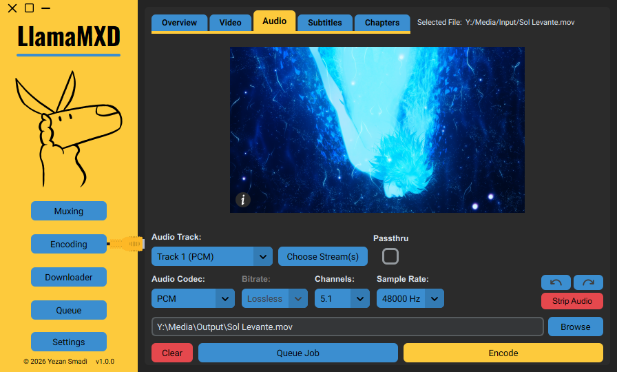
Drop a screenshot named encoding-audio.png into
manual/images/
As with Video, we will start from left to right. First, we have the
Audio Track dropdown. From here you can choose the selected track to adjust the
parameters of. The Choose Stream(s) button will allow you to select/deselect tracks,
annd add/remove streams. The Passthru checkbox will determine if a track is passed
through (copied and left untouched) or not. Options will be greyed out when Passthru is
checked. Passthru is on by default for all tracks. DTS and Dolby TrueHD files are always
passed through as they are lossless.
On the second row is Audio Codec, which provides access to a multitude of different
audio codecs (e.g. AC3, E-AC-3, mp3, etc.). From here, you can keep the codec the same
or choose a compatible audio codec to convert the source audio track to.
The next few options are self-explanatory; Bitrate sets the bitrate of the track,
Channels sets the amount of audio channels for the track, and Sample Rate sets the
sample rate of the track. Each track has its own set of parameters, these are not
shared across all the audio streams.
On the right side above Browse are your undo/redo buttons and a Strip Audio button,
which will remove all audio streams from the export, leaving it a video only file.
Strip Audio, when pressed, becomes a Return Audio button that will restore the audio of
the file when pressed again.
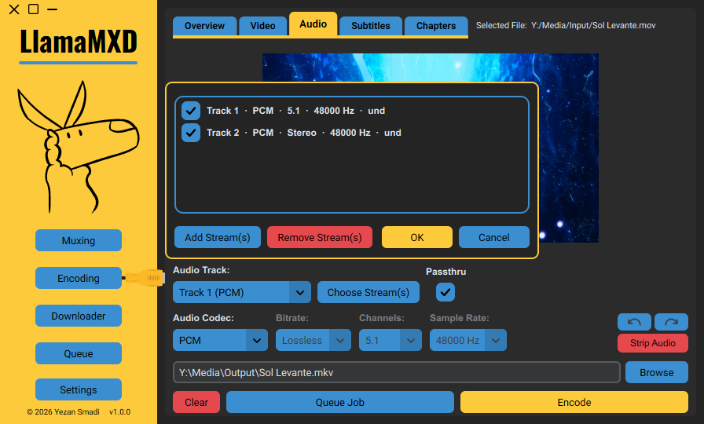
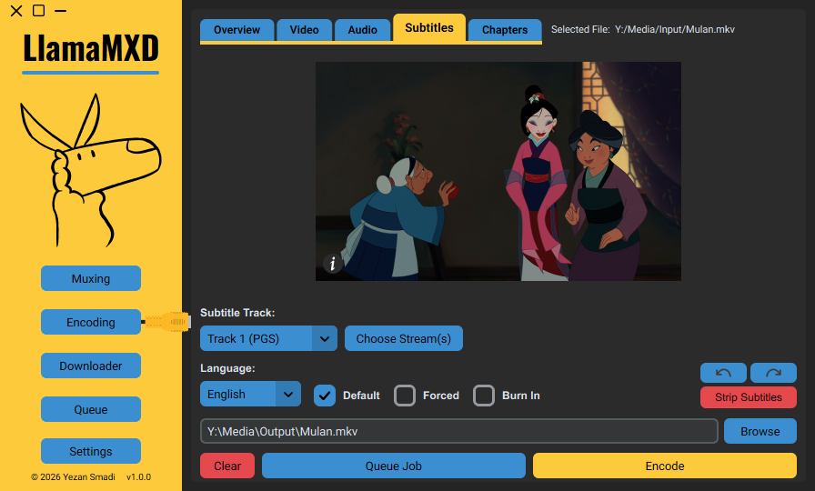
Drop a screenshot named encoding-subtitles.png into
manual/images/
Similar to the Audio subtab, Subtitles has a dropdown for selecting a
subtitle track and a Choose Stream(s) button from which you can add/remove streams and
select/deselect streams.
On the second row is a dropdown for setting the language of the track. This edits the
metadata of the track which helps with media players that choose default audio tracks
based on the user's program language, for the Forced option, and simply for being
organized.
We now have three checkboxes that are very significant; Default, Forced, and Burn In.
Default, when checked, sets the track as the default track of the file. Again, this is
good for media players. There can only be one default track per file. Forced will force
subtitles onto the screen whenever a foreign language is being spoken (e.g. Elvish in
the Lord of the Rings) even when subtitles are off. Burn In will encode the subtitles
directly into the video frame.
On the right side above Browse are your undo/redo buttons and a Strip Subtitles button,
which will remove all subtitle streams from the export. Strip subtitles, when pressed,
becomes a Return Subtitles button that will restore the video of the file when pressed
again.
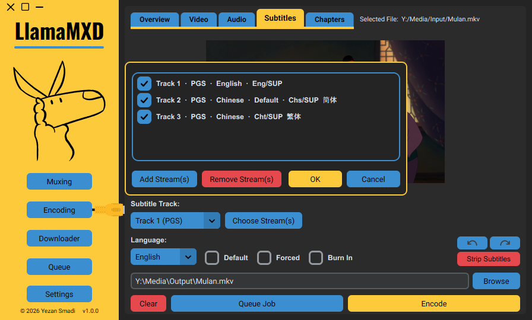
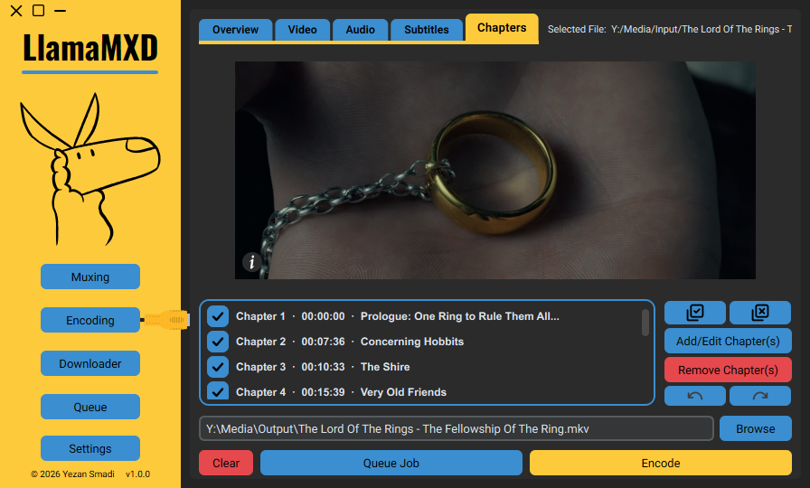
Drop a screenshot named encoding-chapters.png into
manual/images/
Chapters in Encoding operate the same way as in Muxing. There is a
list on the left, from where chapters can be selected/deselected and rearranged.
The Remove Chapter(s) button removes only selected chapters. There is also button for
adding and editing chapters. Here, the timecode and name of a chapter can be edited and
a new chapter can be added as well.
Unticking or removing a chapter from the list won't include said chapters in the
outputted file. Chapters within trimmed files are automatically retimed.
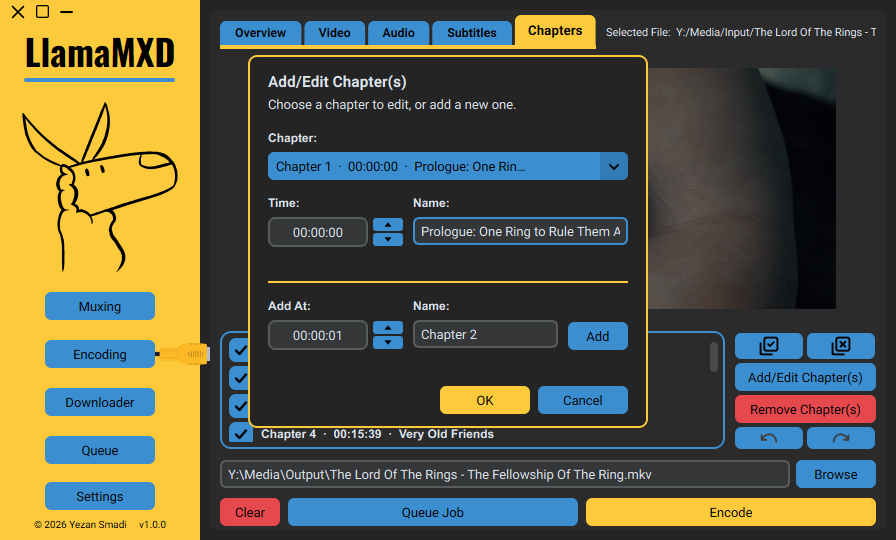
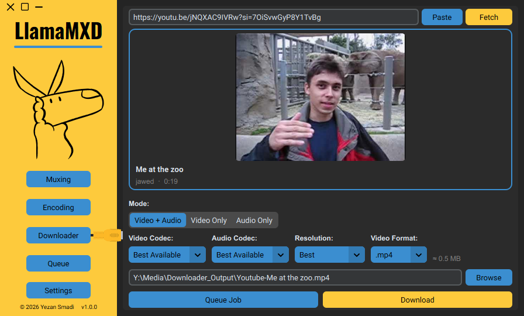
Drop a screenshot named downloader.png into
manual/images/
LlamaMXD's Downloader utilizes the YT-DLP project
(https://github.com/yt-dlp/yt-dlp) to provide you with an easy and
accessible way to
download video and audio from the web. A full list of YT-DLP's supported sites can be
found here:
(https://github.com/yt-dlp/yt-dlp/blob/master/supportedsites.md).
The list is extremely extensive but not all sites are guranteed to work. Your mileage
may vary.
Fetching a link is very easy. Simply paste your compatible link with the Paste button, or paste it yourself into the link field, and hit Fetch. The link, if validated, will be brought into the LlamaMXD Downloader. A preview of the media will appear within the box.
There are many options to consider when downloading your media. Let's
start with Modes, which are self-explanatory; Video + Audio downloads a file with both
video and audio, Video Only will only download the video, and Audio Only will only
download the audio.
Video Codec provides options for available video codecs for the imported media. The same
goes for Audio Codec. Best Available is chosen by default for both. Resolution sets the
video resolution. Video Format chooses the output container for the video. In Audio
Only, this becomes Audio Format. Audio Only also has the Bitrate option instead of
Resolution.
A file size estimate is given next to the Video/Audio Format button.
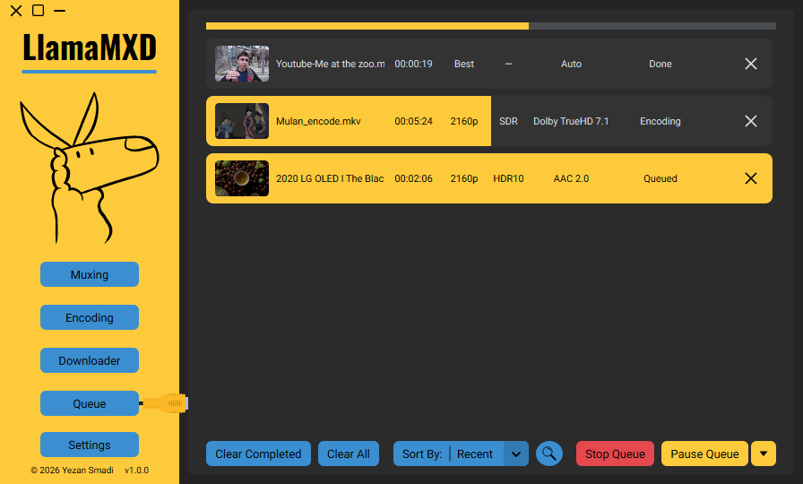
Drop a screenshot named queue.png into
manual/images/
There are two ways to begin a media job in LlamaMXD; the Mux/Encode/Download buttons in the Muxing/Encoding/Downloader tabs respectively, and the Queue Job button. Mux/Encode/Download will immediately start a job in the Queue tab. Queue Job will set up a job and have it wait to start in Queue.
To start a queue of jobs, press the Start Queue button. Jobs will proccess one at a time. The Start Queue button will become a Pause Queue button when pressed and will pause the queue when pressed again. The Start/Pause Queue button also has a dropdown that will decide the behavior of LlamaMXD upon the queue finishing. The behaviors include do nothing, shutdown, sleep, hibernate, lock system, shut down, and quit LlamaMXD. The default is do nothing. Stop queue will completely put a halt to job processing and delete the partial export (don't worry, the job will stay in the queue).
Jobs can be sorted A to Z, Z to A, Recent, and Oldest. Jobs can be rearranged by dragging them around. A job dragged to the top will become the current job even if will result in a "Sort By | Custom". Finished jobs can be cleared with Clear Completed and all jobs can be cleared with Clear All. If Clear All is pressed while unfinished jobs are in the queue, a confirmation box will appear. Jobs in the list can be searched with the search button (magnifying glass). Clicking a job will bring up the details pane for a full rundown of the job. Error messages can be found at the bottom of the details pane.
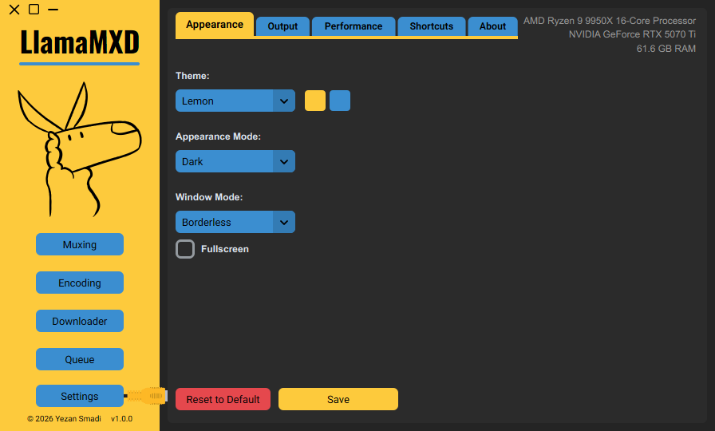
Drop a screenshot named settings-appearance.png into
manual/images/
In the Appearance tab, you get to choose your LlamaMXD theme, your
program's appearance mode, and the program's window mode.
Swatches for your theme sit next to the theme name and indicate the primary and
secondary colors for the selected theme. Themes can be hovered over in the list to
instantly get a preview of how they will look. Appearance Mode changes your programs
appearance between Light, Dark, and System (which will apply the appearance mode
consistent with your system's appearance mode).
Window Mode changes your program's
window between Windowed, Borderless, and Fixed. Windowed is a typical program window,
Borderless does away with the bar at the top of the program, and Fixed keeps the window
at the default size and cannot be resized. Below is a checkbox to always keep the window
fullscreen.
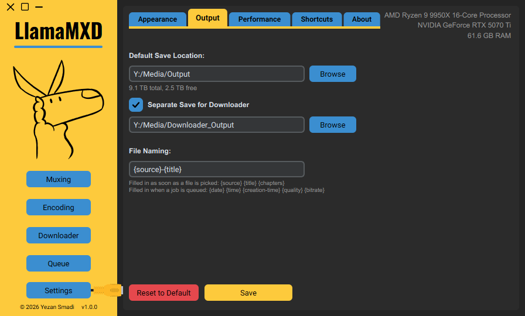
Drop a screenshot named settings-output.png into
manual/images/
Default Save Location sets the default output path for your exported files. A readout of your selected output drive's total and current space are printed below the output field. Seperate Save for Downloader, the checkbox beneath Default Save Location, allows you to have a separate output path for the LlamaMXD Downloader.
Parameters for file naming can be entered here, with the default being {source}-{title}. The full list of file naming parameters, as well as naming examples, can be found in the Reference section under Automatic Naming Parameters. You can also enter text without braces and it will be taken as is (e.g. Export_{source}_final).
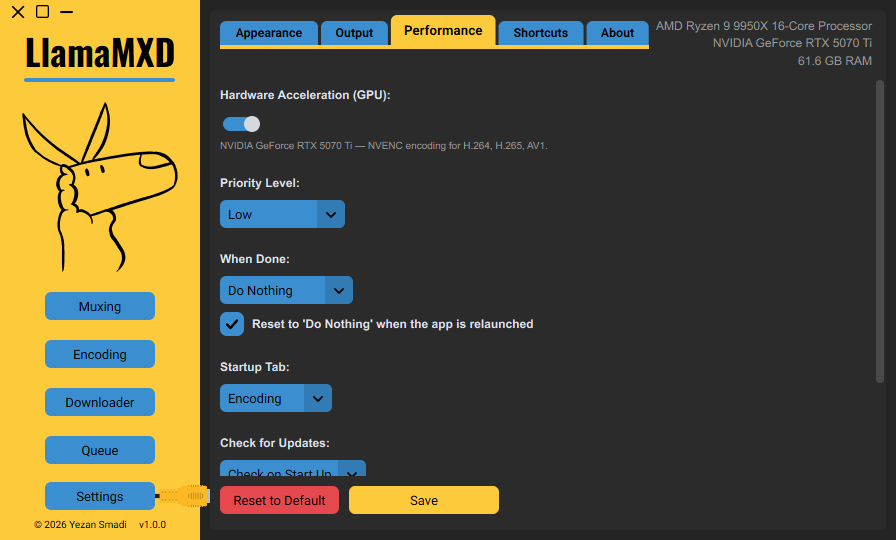
Drop a screenshot named settings-performance.png into
manual/images/
When Hardware Acceleration is turned on, the GPU's encoder is used for
jobs rather than the software decoding with the CPU. Hardware Acceleration is on by
default, when available, and is both a faster method and gentler on the CPU.
Priority affects the CPU priority level of LlamaMXD. Lower is smoother and higher is
faster; a higher priority takes resources away elsewhere on the PC if the CPU has
to ration resources while a lower priority ensures the jobs are not eating up resources
such as I/O priority and memory if they are scarce. On a CPU with enough wiggle room,
for example, Below Normal and Normal work roughly the same. The differences come when
resources must be rationed.
You might have noticed by now if you've spent any time in the Settings tab that there is
a read out of your system info in the top right of the window. This lists your CPU, GPU,
and RAM.
When Done determines the default behavior of LlamaMXD after a queue is
done. These are do nothing, shut down, sleep, hibernate, lock system, log off, and quit
LlamaMXD. Shut down, sleep, hibernate, and log off give you 30 seconds to cancel once
the queue is done. These behaviors can be changed on a per-queue basis in the Queue tab
through the Start Queue dropdown. A checkbox beneath determines if the app will reset
back to Do Nothing on relaunch.
Startup Tab determines which tab LlamaMXD will start on when it is launched. The choices
are between the 5 tabs; Muxing, Encoding, Downloader, Queue, and Settings.
Check for Updates decides whether LlamaMXD looks for a newer LlamaMXD, ffmpeg, yt-dlp
and Deno by itself. Check on Start Up does it a moment after launch and only says
something if it finds an update.
LlamaLog is the session log of the program. The Normal version details events such as
file imports, queue starts, if a job failed or finished, ffmpeg errors, downloads, as
well as LlamaMXD warnings and errors. The Detailed version also adds debug messages,
full ffmpeg info including its diagnostics, as well as more detailed Downloader info.
Normal is the default and should be used the vast majority of the time. If you want to
track down a problem, the Detailed LlamaLog will be more beneficial.
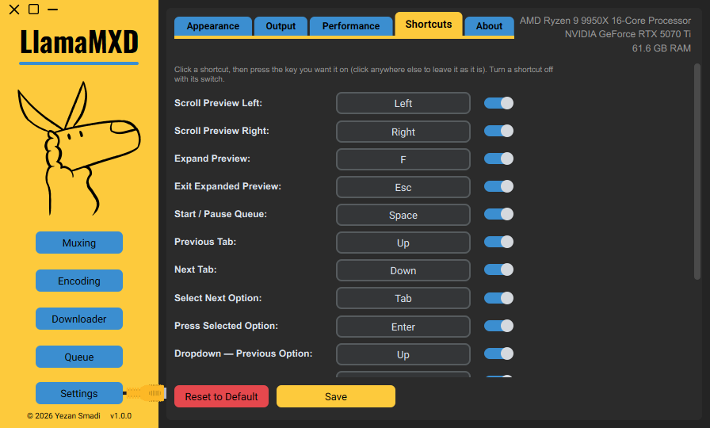
Drop a screenshot named settings-shortcuts.png into
manual/images/
Here you can look over, enable/disable, and rebind keyboard shortcuts for the program. To rebind a shortcut, click the field with the shortcut listed and press a new key. A full list of the default shortcuts can be found in Reference under Shortcuts.
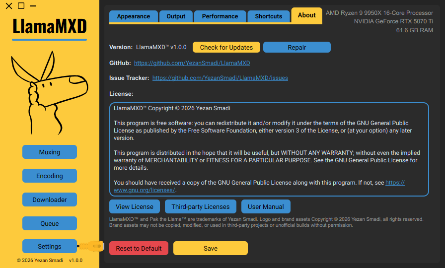
Drop a screenshot named settings-about.png into
manual/images/
Here you'll find the version number of the program, the link to
the Github, a link to the Github issue tracker, and the license for the program,
which is licensed under GNU General Public License v3 (or later). Check for Updates,
beside the version, looks for a newer LlamaMXD or a newer version of its dependables
(ffmpeg, yt-dlp and Deno). Repair reinstalls over damaged files.
Below the license box are buttons for the full license text, the licenses of
third-party programs and assets used in LlamaMXD, and this manual.
| Action | Key |
|---|---|
| Scroll preview left / right Muxing / Encoding | ←→ |
| Expand preview Muxing / Encoding | F |
| Exit expanded preview | Esc |
| Start / Pause the queue Queue tab | Space |
| Previous / next tab | ↑↓ |
| Select next control | Tab |
| Press the selected control | Enter |
| Move through an open dropdown | ↑↓ |
| Toggle fullscreen | F11 |
Every one of these can be given a different key, or turned off, from Settings › Shortcuts.
| Container | Video codecs | Audio codecs |
|---|---|---|
| .mp4 | H.264, H.265, MPEG-4, MPEG-2, AV1 | AAC, AC3, E-AC-3, MP3, ALAC |
| .mkv | H.264, H.265, MPEG-4, MPEG-2, VP8, VP9, AV1, ProRes, DNxHR, FFV1, CineForm | AAC, AC3, E-AC-3, MP3, FLAC, Opus, Vorbis, ALAC, PCM |
| .mov | H.264, H.265, MPEG-4, ProRes, DNxHR, CineForm | AAC, AC3, E-AC-3, ALAC, PCM |
| .webm | VP8, VP9, AV1 | Opus, Vorbis |
| Other formats | File types |
|---|---|
| Video you can import | .mp4, .mkv, .mov, .webm, .avi, .m4v, .mxf, .ts, .vob |
| Audio you can import | .mp3, .m4a, .aac, .flac, .wav, .opus, .ogg, .wma, .aiff |
| Downloader video outputs | .mp4, .mkv, .webm |
| Downloader audio-only outputs | .mp3, .m4a, .opus, .flac, .wav |
| Codec | Profiles (most → least compatible) | Levels (smallest → largest) |
|---|---|---|
| H.264 | High, Main, Baseline, High 10 | 3.0, 3.1, 4.0, 4.1, 4.2, 5.0, 5.1, 5.2 |
| H.265 | Main, Main 10, Main 12 | 3.1, 4.0, 4.1, 5.0, 5.1, 5.2, 6.0 |
| AV1 | Main, High, Professional | 4.0, 5.0, 5.1, 6.0 |
| VP9 | 0, 1, 2, 3 | — |
| MPEG-4 | Simple, Advanced Simple | — |
| MPEG-2 | Main, High, Simple | Low, Main, High-1440, High |
Muxing and Encoding export to the first table's containers; only combinations a container can hold are offered. Picture subtitles (PGS, VobSub, DVB) need .mkv. DTS and Dolby TrueHD pass through untouched. ProRes, DNxHR and CineForm profiles are quality tiers, lowest to highest. A higher level never looks better; it only allows bigger or faster video.
| H.264 | H.265 | What you get | Good for |
|---|---|---|---|
| 0 | 0 | Lossless | Intermediate steps, archive masters |
| 16–18 | 21–23 | Visually lossless | High-quality archiving |
| 20–23 | 25–28 | High quality (the default range) | Everyday encoding and publishing |
| 24–27 | 29–32 | Slightly noticeable loss, clearly smaller files | Cloud backup, casual sharing |
| 28–35 | 33–40 | Visible compression artifacts | Draft previews |
| 36+ | 41+ | Mushy | Rarely a reasonable choice |
| AV1 | What you get | Good for |
|---|---|---|
| 18–24 | Archival quality | Archiving critical sources |
| 22–28 | Visually transparent | Film and other high-quality encodes |
| 25–32 | Balanced | Blu-ray rips, personal libraries (default is 29) |
| 28–35 | Efficient compression | Storage and streaming |
| 32–40 | Low bitrate | Small streaming files; keep under 38 for busy footage |
CRF is a quality target, not a bitrate: lower numbers look sharper and
make bigger files. Every +6 roughly halves the file size. H.265 numbers run about 5 higher than
H.264 for the same look. AV1 has its own scale: one
guide puts AV1 at 30 close to H.265 at 21 and H.264 at 16, so use the AV1 table rather than
converting. All of these are starting points, so check the preview. The slider starts at 22 for
H.264,
27 for H.265 and 29 for AV1. For more information on CRF, check out these sites:
https://ffmpegtool.com/en/blog/crf-explained
https://ffmpeg.party/guides/av1/
| Scenario | H.264 | H.265 | AV1 |
|---|---|---|---|
| Phone or camera footage for storage | 18–20 | 23–25 | 24–28 |
| YouTube or Instagram upload they re-encode, so upload the cleanest file | 18–21 | 23–26 | 22–28 |
| Email or messaging size first, if still watchable | 23–26 | 28–31 | 33–38 |
| Rescuing old footage for the archive | 16–18 | 21–23 | 18–24 |
| Screen recordings and tutorials text shows loss easily | 16–20 | 21–25 | 18–24 |
| Tip |
|---|
| Quality and speed are separate: CRF sets how good it looks, Encoder Preset sets how long it takes and how small the file ends up at that quality. |
| Find the CRF you like on a fast preset, then export with a slower one. |
| Below about 18 there is little visible gain and below 16 is a lot of wasted space. |
| If the output is bigger than the source, raise the CRF or lower the Resolution. |
| Encode only once from the original where you can; each generation of video will look worse. |
H.264 and H.265 numbers are for those two codecs. AV1 uses its own, higher scale, so don't reuse H.264 numbers for it. Other codecs use different scales; treat all of these as a starting point.
| Parameter | What it becomes | Example |
|---|---|---|
| {source} | The input file's name (the site, for a download) | MyVideo |
| {title} | The title stored in the file (the video's title, for a download) | MyVideo 2000 |
| {chapters} | The number of chapters | 12ch |
| {date} | The day you queued the job | 2026-10-25 |
| {time} | The time you queued the job | 20-41-07 |
| {creation-time} | When the media was made (the upload date, for a download) | 2025-03-14_09-30-00 |
| {quality} | Encoding: the CRF or quality value. Downloads: the Resolution (or Bitrate). Empty for Muxing | crf22 |
| {bitrate} | The source's overall bitrate | 8000kbps |
{source}, {title} and {chapters} fill in as soon as you pick a file. The rest are filled in when you queue the job, so each job gets its own date and time. The examples assume a file called MyVideo with the title "MyVideo 2000", 12 chapters, made on 2025-03-14 at 09:30:00, encoded at CRF 22 and queued on 2026-10-25 at 20:41:07.
| Format | File name |
|---|---|
| {source}-{title} | MyVideo-MyVideo 2000 |
| {source}_{quality} | MyVideo_crf22 |
| {title} ({chapters}) | MyVideo 2000 (12ch) |
| {source}_{date}_{time} | MyVideo_2026-10-25_20-41-07 |
| {source}-{bitrate} | MyVideo-8000kbps |
Anything you type around a parameter is kept as it is. If a parameter has nothing to fill in, the separator beside it is dropped too, so a file with no title named with {source}-{title} is just MyVideo. A name can't contain any of < > : " / \ | ? *, and a misspelt parameter is flagged in red under the box in Settings.
A failed job turns red in the Queue and the rest of the queue keeps going. Click the row to open its details: the Error line at the bottom says what went wrong. The most common causes are a full drive, an export file that is open in another program (a player or editor can lock it), or a source file that was moved or deleted after the job was queued. Fix that and press the retry arrow beside the row's ✕ to run it again, ahead of everything else. If the message isn't enough, switch LlamaLog to Detailed in Settings › Performance, run the job again, and press Open Log Folder: each failed job leaves a file there with the full ffmpeg or yt-dlp output.
LlamaMXD only offers codecs a container can actually hold, so a file that won't play is almost always a limit of the player. HEVC (H.265) and AV1 need a fairly recent device or software, WebM is poorly supported outside browsers, and Opus, Vorbis and FLAC audio can be silent on older TVs and phones. For the widest compatibility export an MP4 with H.264 video and AAC audio. An HDR video that looks grey and washed out in a player without HDR support needs HDR to SDR switched on in Encoding.
A link to a playlist is refused; paste a single video's link instead. If you edit the link after fetching, press Fetch again. The Downloader won't queue a link that differs from the one it fetched. A private, age-restricted or region-locked video fails with the site's own reason, shown in the job's Error line. If a banner says Deno wasn't found, or the Downloader can't find yt-dlp or ffmpeg at all, a file belonging to LlamaMXD is missing, so reinstall it. Sites change often and downloads that worked can stop working; a newer LlamaMXD release carries an updated yt-dlp.
It is only available while the selected file is HDR. If you picked an HDR file and it is still off, hover over the switch, the tooltip gives the reason; tone mapping needs your graphics card's driver to support Vulkan, so the usual fix is updating the graphics driver. For a moment after importing an HDR file the switch says it is checking whether this PC can tone-map. Wait a second and it will enable.
They mean different things. Couldn't Read This File means the file is damaged or in a format ffmpeg can't open, and it is not selected. Try remuxing it with another tool, or re-downloading it. No Preview Available means the file opened fine but no preview pictures could be made, and the file is still selected and usable: Muxing, Encoding and the queue work as normal.
The Output Format decides everything else, so changing it can change your other choices. A toast says what moved and why, for example “Encoder switched to VP9 — .webm can't carry H.265”. Adding a picture subtitle (PGS, VobSub or DVB) forces .mkv, since no other container holds them. Resolution and FPS lists stop at the source's own, because LlamaMXD never upscales. Dolby TrueHD and DTS tracks can't be re-encoded and always pass through as they are.
Muxing copies streams without re-encoding, and a copied video can only be cut on a keyframe, so a mux starts at the keyframe at or just before your Start Time. The Overview page's rundown marks this with “keyframe”. For a cut to the exact frame, use Encoding, which re-encodes the video.
Jobs only run once you press Start Queue; Queue Job just adds them, and a paused queue stays paused until you press the button again. Only one job runs at a time. If a job is slower than expected, check Settings › Performance. A Priority Level of Below Normal or Low deliberately gives way to other programs, and Hardware Acceleration (GPU) speeds up H.264, H.265 and AV1 encodes if you have a dedicated graphics card.
Muxing never re-encodes. It changes the container and picks which streams to keep, so it is fast and the picture and sound are untouched. Encoding re-encodes the video and audio, which is slower and always costs a little quality, but it can change the codec, size, frame rate and quality. If you only want a different file type, or to drop a track, use Muxing.
No. An export is written to a temporary .partial file and
moved to its real name only when the job succeeds. A stopped or failed job deletes just
that temporary file, and a file you already had at the export path is never touched
unless you agreed to replace it.
Anything ffmpeg can read; nearly every video and audio format, audio-only files included. A file that can't be read at all is rejected with a message when you pick it. The Containers & Codecs page lists what each export format can hold.
Muxing and Encoding work fully offline. Only the Downloader and the Check for Updates button in Settings › About use the internet, and the update check runs only when you press it, unless you set Check for Updates to Check on Start Up in Settings › Performance. LlamaMXD has no account and no telemetry. Its log stays on your PC and web addresses in it are saved without their query part.
Re-encoding is heavy work, and the slowest settings are the best-compressing ones. To speed it up, choose a faster Encoder Preset, turn on Hardware Acceleration (GPU) in Settings if you have a dedicated graphics card, lower the Resolution or FPS, or use Muxing when you don't need a re-encode. Priority Level in Settings › Performance decides how much the PC favors other programs over the job.
Not yet. The Downloader takes one video's link at a time and refuses a playlist link with a message. Open the video you want and paste its own link.
Yes. Use Add/Edit Subs, Add/Edit Video, Add/Edit Audio, or Choose Stream(s) in Encoding to browse another file and pick its streams. The added track is lined up against the main file's timeline, so it has to be timed to match; there is no offset control. Chapters are edited by hand in the Chapters page rather than imported.
It asks first. While the question is open the queue is paused, so choosing No carries on exactly where it left off. Choosing Yes stops the running job, deletes its partial export, and closes the app. Jobs still waiting in the queue are not kept for next time.
Yes. It is free software under the GNU General Public License, version 3 or later, so you can use, share and modify it. Settings › About has the notice and buttons for the full license and the licenses of everything bundled with it, including ffmpeg and yt-dlp. The LlamaMXD name, logo, and art are the exception.
On the Issue Tracker linked in Settings › About (the Github's issue tracker is linked). For a bug, attach the failed job's log file from Settings › Performance › LlamaLog › Open Log Folder, with the log set to Detailed before you reproduce the problem.
LlamaMXD™ is free software, licensed under the GNU General Public License v3
(or later). You're free to redistribute and modify it under that license's
terms — see LICENSE.txt and the licenses/ folder
next to the app for full details and every third-party notice.
LlamaMXD™ and Pak the Llama™ are trademarks of Yezan Smadi. Logo and brand assets Copyright © 2026 Yezan Smadi, all rights reserved.